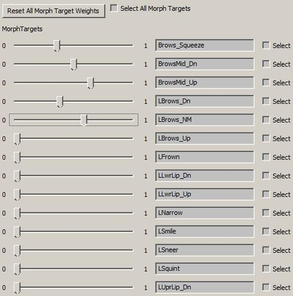
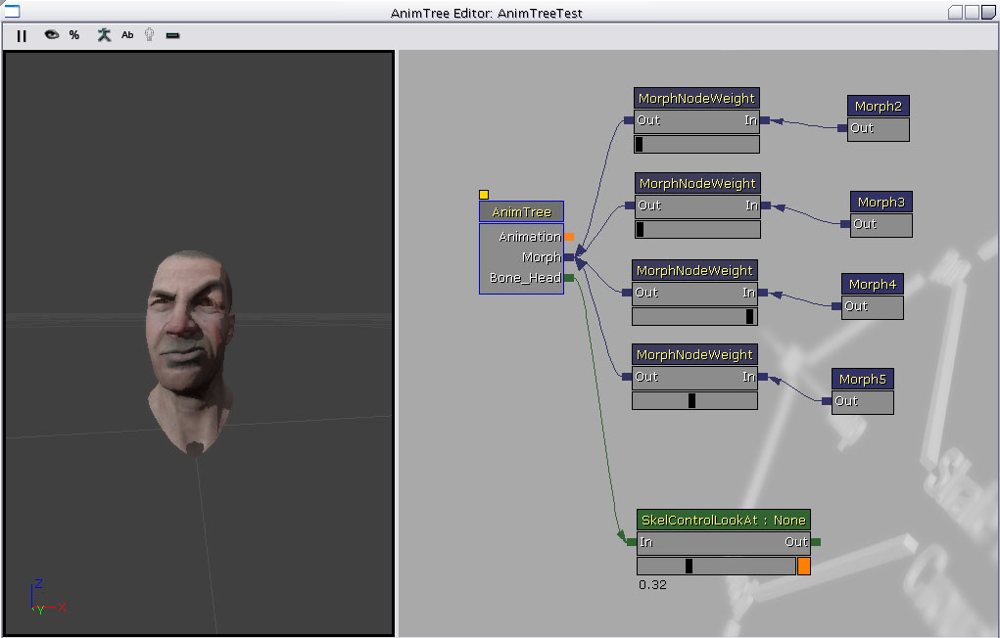
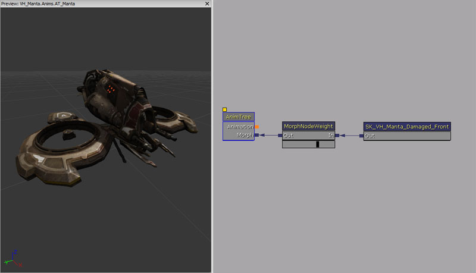
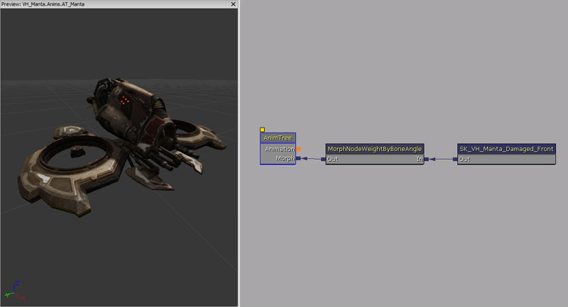
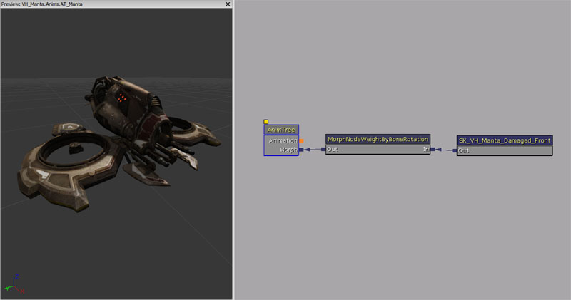
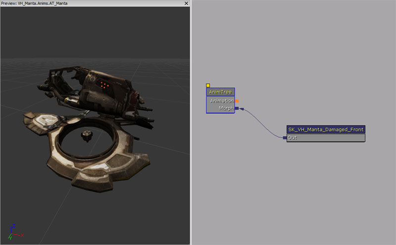
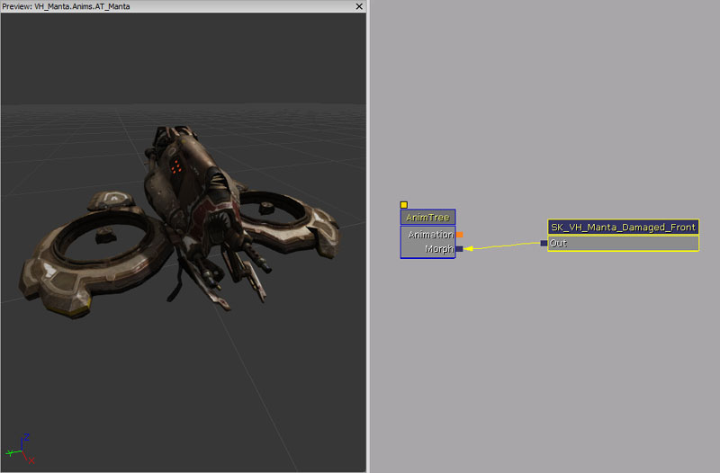

UDN
Search public documentation:
MorphTargets
日本語訳
中国翻译
한국어
Interested in the Unreal Engine?
Visit the Unreal Technology site.
Looking for jobs and company info?
Check out the Epic games site.
Questions about support via UDN?
Contact the UDN Staff
中国翻译
한국어
Interested in the Unreal Engine?
Visit the Unreal Technology site.
Looking for jobs and company info?
Check out the Epic games site.
Questions about support via UDN?
Contact the UDN Staff
UE3 Home > Skeletal Meshes > Morph Targets
UE3 Home > Animation > Morph Targets
UE3 Home > Character Artist > Morph Targets
UE3 Home > Animation > Morph Targets
UE3 Home > Character Artist > Morph Targets
Morph Targets
Overview
Morph Targets are a way to modify a mesh with more control than bone-based skeletal animation. A static Morph Target is a version of an existing mesh that is slightly different in some way. For example, you might create a smiling version for a character, and import that as a "smile" morph target. Then in the game you can apply this morph target to modify the vertices on the face and make your character smile, but with a great deal of control over how each vertex moves. Morph Targets in Unreal Engine 3 are applied in an additive manner. That means that if you have one Morph Target for "smile" where only vertices around the mouth are modified, and another for "raise eyebrow" which only affects vertices around the eyes, applying both of these would cause both the smile and eyebrow movements to appear. This allows you to create a wide range of facial poses, for example, by combining multiple targets together. Beyond processing and memory constraints, there is no limit to the number of morph targets which can be active on a skeletal mesh at any given time. Morph Targets and skeletal animation can work together. Morph Targets are applied to the skeletal mesh before the bone transformations are applied. Morph Targets should be authored based on the reference pose mesh of the mesh, and then on import the vertices are compared against the base mesh, and only those that differ are stored. This reduces the memory cost when working with morph targets that modify only a subset of the base mesh's vertices.
Exporting and Importing Morph Targets
See the Exporting Morph Targets using FBX page for information on how to export morph targets using FBX. See the Importing Morph Targets using FBX page for information on how to import morph targets using FBX. If your skeletal mesh has more than one LOD level then you will need to also import morph targets for each of those LODs. This is done with the 'Import MorphTarget LOD' option from the File menu. Just as the LOD 0 morph targets have to be generated from the LOD 0 mesh of the base skeletal mesh, each new morph target LOD level has to be generated from the same LOD of the base skeletal mesh in order for the vertices to match up properly. Note that if you have more than one LOD for your base mesh but no morph target LODs for them then when the mesh drops to the lower LOD no morph targets will be applied.
Morph Target Animations
You can export animation data with Blend Shapes to a FBX file and import it as an animation. You will need the MorphTargetSets to contain the Morph Target the animation needs. It matches with the name of the BlendCurve. For example, if you have BlendCurve named "blink" in the source file and export that as animation, the MorphTargetSet (linked to the SkeletalMeshComponent) should include "blink" for animation to work. To allow preview in AnimSet Editor, add the proper MorphTargetsets to PreviewMorphTargetSets. In the AnimTree, you can now use that animation in AnimNodeSequence and it will blend by normalizing morph target weights by node weight.
Previewing Morph Targets
In Morph Target tab, you'll see list of Morph Targets with sliders. You will be able to change weights using sliders for any Morph Target. 
Renaming Morph Targets
You can rename Morph Targets in the edit box, but if the Morph Target is used in animation, changing name can invalidate the animation. However using MorphNodePose (or other MorphTarget related nodes) should be working fine if you set it correctly.
Deleting Morph Targets
Select which Morph Target to delete first and you can delete in Delete Morph Targets in the menu. You can use Select All to select/deselect all.
Updating Morph Targets
If base mesh has been modified (i.e. influence changes), when you open Morph Target viewer, it will ask you if it can remap the morph targets. This does not work if the Morph Target (with previous mesh) has been incorrectly mapped. You can also use Update Morph Target menu in Morph Target Set.
Controlling Morph Targets
You can control Morphs through FaceFX, in Matinee, or in code.
Adding Morph Targets To An AnimTree
 To be able to blend multiple Morph Targets together at a time, you use an AnimTree. In the AnimTree Editor , you will see an input to the root "Animations" node labeled Morph. This is for connecting various type of Morph Node to. There are 2 main types of Morph Node:- Morph Pose - This is a static Morph Target from a MorphTargetSet.
- Morph Weight - This is a node used to control the "strength" that it's child nodes are applied with. This type of node has a slider on it that allows you to modify the weight in the editor, and see the results.
Using Morph Targets in Matinee
To use Morphs in Matinee...- Make an AnimTree with MorphPoses going through MorphNodeWeight into the Morph track.
- Give the MorphNodeWeight a NodeName, this is the name you will use to drive it in Matinee.
- To see the morphs in the AnimTree Viewer, select the AnimTree, and set the PreviewSkelMesh, and PreviewMorphSets.
- Add your skeletal mesh to the world with the right click add actor/add SkeletalMeshMAT, this allows it to use the Animtree.
- Select the mesh, and in its properties go to SkeletalMeshactpr/SkeletalMeshComponent/SkeletalMeshComponent, and set the AnimTreeTemplate and MorphSets to the one you created.
- Create a Matinee, and add a NewSkeletalMeshGroup for you mesh, and right click on it and add a Morph Weight. Select it and in the properties add the NodeName of the MorphNodeWeight in the AnimTree to the MorphNodeName section. Now you can add key frames, and animate it like any matinee track. You can have multiple MorphWeight tracks at the same time, and blend them together. To animate a sequence of morphs, you have to turn one off as you are turning the other one on.
Using Morph Targets in Unrealscript
You can use UnrealScript to modify the weight of Morph Targets in game. To do this, you must first set the 'NodeName' property of the Morph Node in the AnimTree Editor. You can then use the 'FindMorphNode' function in SkeletalMeshComponent to look for a node by name, and then call SetNodeWeight to change the weight of a node. Here is an example:
var MorphNodeWeight WeightNode;
simulated event PostInitAnimTree(SkeletalMeshComponent SkelComp)
{
Super.PostInitAnimTree(SkelComp);
if (SkelComp == Mesh)
{
WeightNode = MorphNodeWeight(Mesh.FindMorphNode('MyNode'));
if(WeightNode != None)
{
WeightNode.SetNodeWeight(NewWeight);
}
}
}
simulated function Destroyed()
{
Super.Destroyed();
WeightNode = None;
}
Morph Target Node Reference
Morph Node Weight
This morph node allows you to dynamically adjust the weight of all morph node poses attached. 
Properties
- Node Name - Name of the node, which allows Unrealscript to find this morph node.
Unrealscript functions
- SetNodeWeight(float NewWeight) - Sets the weight of the node.
- NewWeight - New weight to set.
Morph Node Weight By Bone Angle
This morph node gets the shortest angle between two bones (0 degrees to 180 degrees), and translates that into a weight scaling morph targets using used defined values. The material parameters can be used to automatically adjust material parameters together with this morph node. 
Properties
- Base Bone Name - Base bone name.
- Base Bone Axis - Axis to use on Base Bone, X, Y or Z.
- Invert Base Bone Axis - If true, then the base bone axis is inverted.
- Angle Bone Name - Angle bone name.
- Angle Bone Axis - Axis to use on Angle Bone, X, Y or Z.
- Invert Angle Bone Axis - If true, then the angle bone axis is inverted.
- Control Material Parameter - If true, then this morph node also controls a material parameter.
- Material Slot Id - Material slot on the Skeletal Mesh to control.
- Scalar Parameter Name - Material scalar parameter name to control.
- Weight Array - Array of weights to use at different angles.
- Angle - Angle to apply this weight.
- Weight - Weight to apply.
Morph Node Weight By Bone Rotation
This node maps the rotation of a bone, compared to the ref skeleton, to a weight scaling morph targets using used defined values. 
Properties
- Base Bone Name - Base bone name.
- Base Bone Axis - Axis to use on Base Bone, X, Y or Z.
- Invert Base Bone Axis - If true, then the base bone axis is inverted.
- Weight Array - Array of weights to use at different angles.
- Angle - Angle to apply this weight.
- Weight - Weight to apply.
- Control Material Parameter - If true, then this morph node also controls a material parameter.
- Material Slot Id - Material slot on the Skeletal Mesh to control.
- Scalar Parameter Name - Material scalar parameter name to control.
Morph Node Multi Pose
This morph node applies multiple morph targets stored within the morph target sets. You can also adjust the total weight of each morph target that is applied by this morph node by adjusting the weight value stored in the array. 
Properties
- Morph Names - Names of the morph targets to apply.
- Weights - Weights for each of the morph targets to apply.
- Node Name - Name of the node, which allows Unrealscript to find this morph node.
Unrealscript functions
- AddMorphTarget(Name MorphTargetName, optional float InWeight = 1.0f) - Add the MorphTarget to use for this MorphNodeMultiPose by name. Will find it in the owning SkeletalMeshComponent MorphSets array using FindMorphTarget. Returns true if the morph target has been added.
- MorphTargetName - Name of the morph target to add.
- InWeight - Weight to set this morph target.
- RemoveMorphTarget(Name MorphTargetName) - Remove the MorphTarget from using for this MorphNodeMultiPose by name.
- MorphTargetName - Name of the morph target to remove.
- UpdateMorphTarget(MorphTarget Target, float InWeight) - Update weight of the morph target.
- Target - Morph target to modify the weight of.
- InWeight - New weight to set this morph target.
Morph Node Pose
This morph node applies the morph target stored within the morph target sets. You can also adjust the total weight that is applied by this morph node by adjusting the weight value. 
Properties
- Morph Name - Name of the morph target to apply.
- Weight - Total weight to apply.
- Node Name - Name of the node, which allows Unrealscript to find this morph node.
Unrealscript functions
- SetMorphTarget(Name MorphTargetName) - Sets the morph target.
- MorphTargetName - Name of the morph target to set.